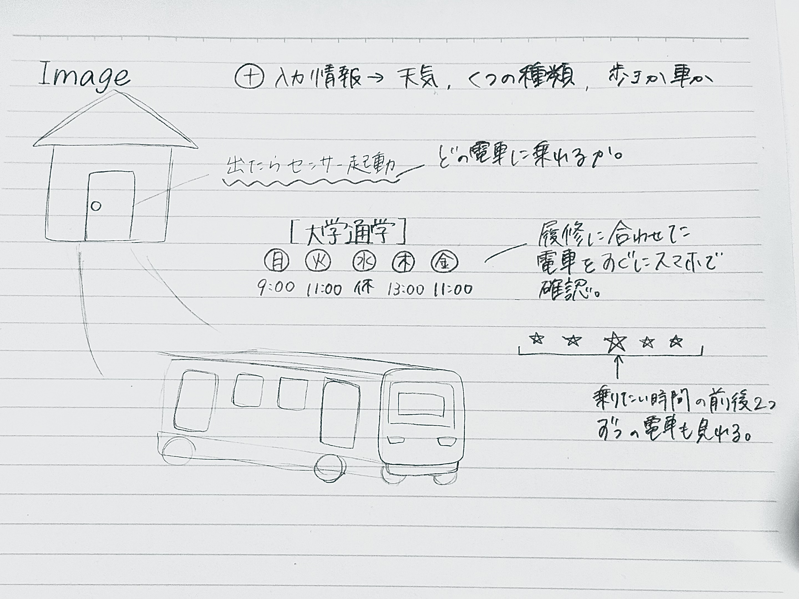

共同制作者
タッカンマリ
muku
アイディアのスケッチ

概要
朝が苦手な私たちにとって、朝は1分1秒がかなり重要になってくる！！
ということで、朝大学に行くために乗る電車が毎日すぐに見ることができたらありがたい！と考えました〜
家を出る時にスイッチを押してから出かけると、同時にスマホに電車の情報が通知されるというサービスが欲しい。
プロセスメモープロセス・必要なモノやステップ・やるべきこと（プロジェクトマネジメント）
■は考えないといけないこと、疑問等
●は具体的にやること
→はやったこと
■考えている電車サービス
メインの電車とその前後2本、計5本の電車の運行状況がリアルタイムでわかるシステム。
その日の服装や天候、体調など様々なことを考慮してくれる。
電車が遅延している場合は通知で知らせてくれる。
【必要な情報】
電車の運行状況
天気
服装
持ち物の重さ
■サービスの流れ(仮)
1. QRコードを読み取る
2. 家を出たことを通知
3. 通知が来たら電車の情報を調べる
4. 電車の情報がLINEに送られる
5. 1〜4を繰り返す。
必要な要素と技術
■1. 電車の発車時刻データの取得
・ 鉄道会社のAPI: 電車の発車時刻を提供するAPI（例：JR東日本の「駅すぱあと」APIや、各鉄道会社のAPI）
■2. LINEへの通知
・ LINE Messaging API: LINEにメッセージを送信するためのAPI。ユーザーのLINEアプリに通知を送ることができます。
■3. QRコード読み取りと連動
・ QRコード生成と読み取り: 玄関に設置するQRコードと、それを読み取るスマホアプリ
（例：Google Chart APIを使ったQRコード生成、スマホ内蔵のQRコードリーダー）
■4. サーバーサイド
・ Webサーバー: サービス全体を統括するサーバー（例：AWS Lambda、Heroku、VPS）
・ データベース: ユーザー情報や発車時刻データを保存するデータベース（例：MySQL、PostgreSQL、MongoDB）
■5. 位置情報の取得
・ Google Maps API: 家から駅までの時間を計算するためのAPI。ユーザーの位置情報を取得し、最適な発車時刻を計算するのに役立ちます。
サービスのワークフロー
■1. ユーザー登録と設定
・ ウェブインターフェースでユーザーが登録し、最寄り駅や通勤経路を設定します。
■2. QRコード生成と設置
・ サービス内でユーザーが専用のQRコードを生成し、玄関に設置します。
■3. 発車時刻データの取得
・ 電車の発車時刻データをAPIから定期的に取得し、データベースに保存します。
■4. 位置情報と移動時間の計算
・ ユーザーの位置情報をGoogle Maps APIで取得し、家から駅までの移動時間を計算します。
■5. QRコード読み取りと通知のトリガー
・ ユーザーが玄関でQRコードを読み取ると、スマホがサーバーに信号を送信します。
・ サーバーはユーザーの設定と現在時刻、移動時間を元に、次の電車の発車時刻とその前後2つの時間を計算します。
■6. LINE通知
・ 計算された発車時刻情報をLINE Messaging APIを使ってユーザーに通知します。
必要な技術の詳細
・ QRコード生成と読み取り: QRコードを生成し、スマホアプリで読み取る機能を実装します。Google Chart APIを使ってQRコードを生成し、スマホの標準QRコードリーダーを利用します。
・ サーバーサイドプログラミング: 発車時刻の計算やLINE通知を行うバックエンドのロジックを実装します（例：Python, Node.js, Ruby）。
・ データベース管理: ユーザー情報や発車時刻データを管理します。
推奨されるライブラリとツール
・ Flask/Django（Python）: サーバーサイドフレームワーク
・ Express（Node.js）: サーバーサイドフレームワーク
・ React/Vue.js: フロントエンドフレームワーク
・ MongoDB/MySQL/PostgreSQL: データベース
・ LINE Messaging API SDKs: LINE APIと連携するためのSDK（例：Python, Node.js向け）
・ Google Maps API: 位置情報と移動時間の計算に使用
実装手順の概略
■1. ユーザー登録・ログインシステムの構築
・ ユーザー情報をデータベースに保存し、認証システムを構築。
■2. QRコード生成と管理
・ ユーザーごとにQRコードを生成し、玄関に設置するための手順を提供。
■3. API連携
・ 鉄道会社のAPIとGoogle Maps APIを統合して、必要なデータを取得。
■4. サーバーロジックの実装
・ QRコード読み取り時にサーバーに通知を送る仕組みを構築し、最適な発車時刻を計算。
■5. LINE通知の実装
・ 計算結果をLINEに通知するロジックを実装。
■6. テストとデプロイ
・ 全体のテストを行い、問題がなければ本番環境にデプロイ。
このプロジェクトには、ソフトウェア開発の知識と、APIの利用に関する理解が必要です。
特に、位置情報や発車時刻の計算など、ユーザー体験を向上させるためのロジックが重要です。
使用したモノ（リンクも）
紹介動画